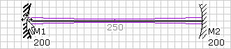
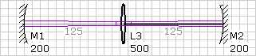
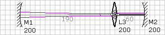

LaserCanvas 5 > Tutorials > Simple Resonator >
Next, we add a lens to the cavity. When adding new optics, we need to select the optic directly preceding the segment where the new optics should be added. In some special cases, not all types of optics can be added.


The new lens is created with a default focal length of f = 500 mm, centred between the mirrors. The lens and the following segment are automatically selected, so we could add more optics by repeating the Insert command.

Unlike mirrors, lenses can only be moved along the section between two mirrors. This is also true for other type of optics, such as crystals.